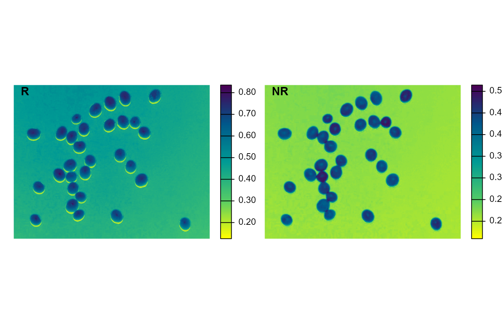
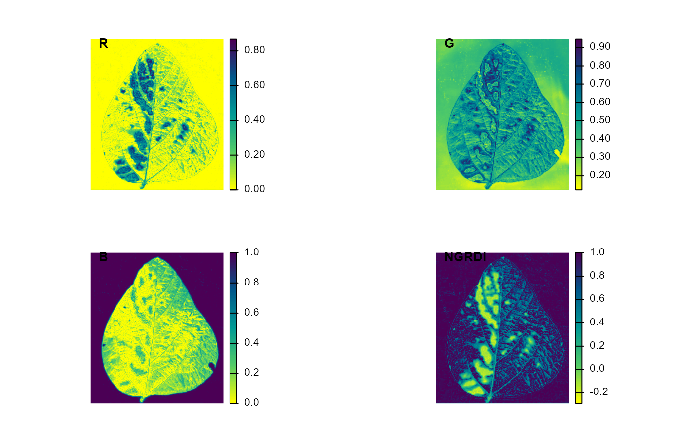
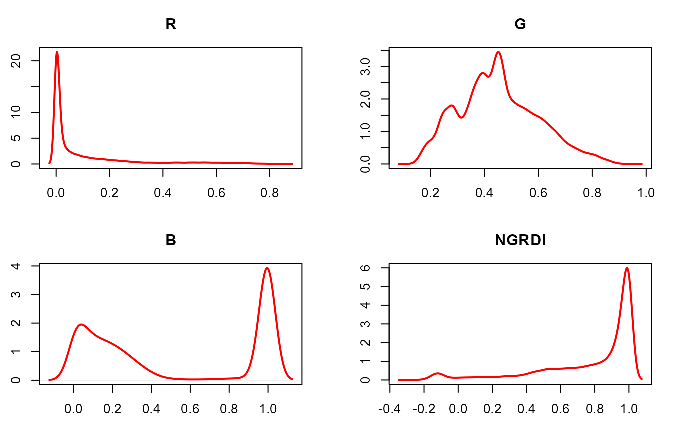

image_index() Builds image indexes using Red, Green, Blue, Red-Edge, and
NIR bands. See this page for a
detailed list of available indexes.
The S3 method plot() can be used to generate a raster or density plot of
the index values computed with image_index()
Usage
image_index(
img,
index = NULL,
r = 1,
g = 2,
b = 3,
re = 4,
nir = 5,
return_class = c("ebimage", "terra"),
resize = FALSE,
has_white_bg = FALSE,
plot = TRUE,
nrow = NULL,
ncol = NULL,
max_pixels = 1e+05,
parallel = FALSE,
workers = NULL,
verbose = TRUE,
...
)
# S3 method for class 'image_index'
plot(x, type = c("raster", "density"), nrow = NULL, ncol = NULL, ...)Arguments
- img
An
Imageobject. Multispectral mosaics can be converted to anImageobject usingmosaic_as_ebimage().- index
A character value (or a vector of characters) specifying the target mode for conversion to a binary image. Use
pliman_indexes()or thedetailssection to see the available indexes. Defaults toNULL(normalized Red, Green, and Blue). You can also use "RGB" for RGB only, "NRGB" for normalized RGB, "MULTISPECTRAL" for multispectral indices (provided NIR and RE bands are available) or "all" for all indexes. Users can also calculate their own index using the band names, e.g.,index = "R+B/G".- r, g, b, re, nir
The red, green, blue, red-edge, and near-infrared bands of the image, respectively. Defaults to 1, 2, 3, 4, and 5, respectively. If a multispectral image is provided (5 bands), check the order of bands, which are frequently presented in the 'BGR' format.
- return_class
The class of object to be returned. If
"terrareturns a SpatRaster object with the number of layers equal to the number of indexes computed. If"ebimage"(default) returns a list ofImageobjects, where each element is one index computed.- resize
Resize the image before processing? Defaults to
resize = FALSE. Useresize = 50, which resizes the image to 50% of the original size to speed up image processing.- has_white_bg
Logical indicating whether a white background is present. If TRUE, pixels that have R, G, and B values equals to 1 will be considered as NA. This may be useful to compute an image index for objects that have, for example, a white background. In such cases, the background will not be considered for the threshold computation.
- plot
Show image after processing?
- nrow, ncol
The number of rows or columns in the plot grid. Defaults to
NULL, i.e., a square grid is produced.- max_pixels
integer > 0. Maximum number of cells to plot the index. If
max_pixels < npixels(img), downsampling is performed before plotting the index. Using a large number of pixels may slow down the plotting time.- parallel
Processes the images asynchronously (in parallel) in separate R sessions running in the background on the same machine. It may speed up the processing time when
imageis a list. The number of sections is set up to 70% of available cores.- workers
A positive numeric scalar or a function specifying the maximum number of parallel processes that can be active at the same time.
- verbose
If
TRUE(default) a summary is shown in the console.- ...
Additional arguments passed to
plot_index()for customization.- x
An object of class
image_index.- type
The type of plot. Use
type = "raster"(default) to produce a raster plot showing the intensity of the pixels for each image index ortype = "density"to produce a density plot with the pixels' intensity.
Value
A list containing Grayscale images. The length will depend on the number of indexes used.
A NULL object
Details
When type = "raster" (default), the function calls plot_index()
to create a raster plot for each index present in x. If type = "density",
a for loop is used to create a density plot for each index. Both types of
plots can be arranged in a grid controlled by the ncol and nrow
arguments.
References
Nobuyuki Otsu, "A threshold selection method from gray-level histograms". IEEE Trans. Sys., Man., Cyber. 9 (1): 62-66. 1979. doi:10.1109/TSMC.1979.4310076
Karcher, D.E., and M.D. Richardson. 2003. Quantifying Turfgrass Color Using Digital Image Analysis. Crop Science 43(3): 943–951. doi:10.2135/cropsci2003.9430
Bannari, A., D. Morin, F. Bonn, and A.R. Huete. 1995. A review of vegetation indices. Remote Sensing Reviews 13(1–2): 95–120. doi:10.1080/02757259509532298
Author
Tiago Olivoto tiagoolivoto@gmail.com
Examples
library(pliman)
img <- image_pliman("soybean_touch.jpg")
image_index(img, index = c("R, NR"))

# Example for S3 method plot()
library(pliman)
img <- image_pliman("sev_leaf.jpg")
# compute the index
ind <- image_index(img, index = c("R, G, B, NGRDI"), plot = FALSE)
plot(ind)

# density plot
plot(ind, type = "density")
